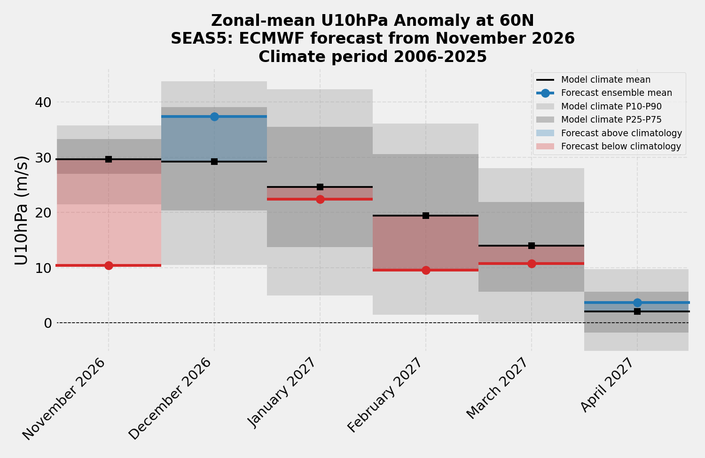

Weather Programmer / seasonal
ECMWF SEAS5 monthly outlook for the next six months. The polar vortex chart is the zonal-mean 10 hPa wind at 60°N. Temperature and precipitation are population-weighted across major ERCOT cities; wind and solar radiation are weighted toward Texas production regions.
Loading latest init…
